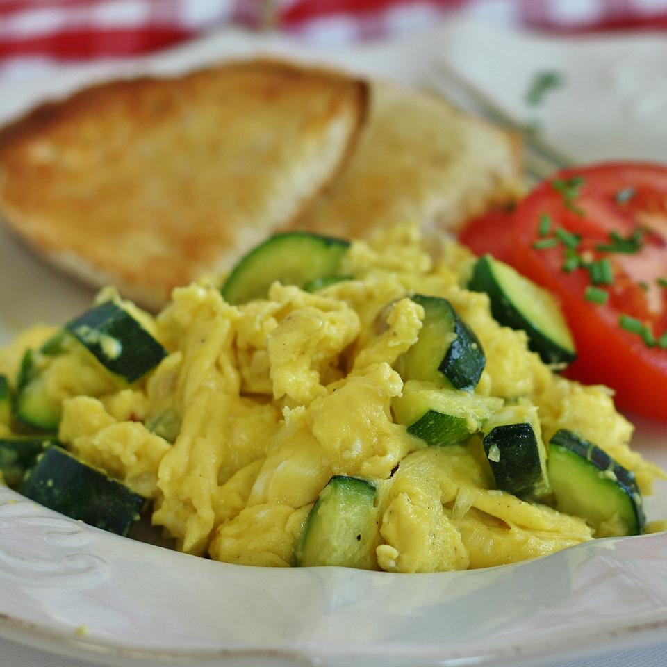

Zucchini with Egg

Easy dish!
This is a dish my grandparents used to make. It is so simple, yet it is so yummy! It is great in the summer and even better with homegrown zucchini.
Ingredients
- 1 1/2 tbsp olive oil
- 2 large zucchini, cut into large chunks
- salt and pepper to taste
- 2 large eggs
- 1 tsp water, or as desired
Steps
- Heat oil in a skillet over medium-high heat; saute zucchini until tender, about 10 minutes. Season zucchini with salt and black pepper.
- Beat eggs with a fork in a bowl; add water and beat until evenly combined. Pour eggs over zucchini; cook and stir until eggs are scrambled and no longer runny, about 5 minutes. Season zucchini and eggs with salt and black pepper.